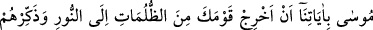
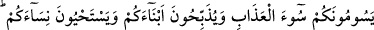
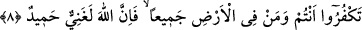

ŞÜKREDERSENİZ ARTIRIRIM
4. (Allah’ın emirlerini) onlara iyice açıklasın diye her peygamberi yalnız kendi
kavminin diliyle gönderdik. Artık Allah dilediğini saptırır, dilediğini de doğru yola
iletir. Çünkü O, güç ve hikmet sâhibidir.
5. Andolsun ki Mûsâ’yı da: ‘Kavmini karanlıklardan aydınlığa çıkar ve onlara
Allah’ın (geçmiş kavimlerin başına getirdiği felâket) günlerini hatırlat’ diye
mucizelerimizle gönderdik. Şüphesiz ki bunda çok sabreden, çok şükreden herkes
için âyetler vardır.
6. Hani Mûsâ kavmine demişti ki: “Allah’ın üzerinizdeki nîmetini hatırlayın. O,
sizi Firavun ailesinden kurtardı. Onlar sizi işkencenin en kötüsüne sürüyorlar ve
oğullarınızı kesip kadınlarınızı (kızlarınızı) sağ bırakıyorlardı. Bunda Rabbinizden
size büyük bir imtihan vardı.”
7. “Hatırlayın ki Rabbiniz size: “Eğer şükrederseniz, elbette size (nîmetimi)
artırırım ve eğer nankörlük ederseniz hiç şüphesiz azâbım çok şiddetlidir!” diye
bildirmişti.”
8. Mûsâ dedi ki: “Eğer siz ve yeryüzünde olanların hepsi nankörlük etseniz, bilin
ki Allah gerçekten zengindir, hamd edilmeye lâyıktır.”
Allah’ın emirlerini “onlara iyice açıklasın diye her peygamberi yalnız kendi
kavminin diliyle gönderdik.” Zâdü’l-mesîr’de şöyle rivâyet edilmiştir: “Kureyş: ‘Ne
haldir ki indirilen kitapların hepsi yabancı dille gönderilmiş olduğu halde Muhammed’e
gelen kitap Arapça’dır?!” dediler. Bunun üzerine bu âyet nâzil oldu.”